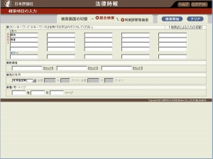
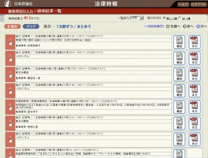
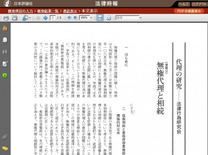

HORITSU JIHO
法律時報
『法律時報』本誌に掲載された論文・記事・判例評釈等を、書誌情報と本文PDFで検索・閲覧できるデータベースです。
サービス内容
旧案内ページでは、『法律時報』本誌の創刊号（1929年）以降に掲載された論文・記事・判例評釈等を、書誌情報（テキスト）と本文（PDF）の形式で収録するサービスとして案内していました。
- 「法律時報文献月報（判例評釈を含む）」は、法律文献総合INDEX（Hobs）で提供されています。
- 「学界回顧」「判例回顧と展望」は、それぞれ独立したデータベースとして提供されています。
画面例



TKCローライブラリーでのご利用
契約・料金・利用方法等の最新情報は、TKCローライブラリー公式サイトでご確認ください。
TKCローライブラリーを見るご利用にあたって
収録範囲や提供条件は変更されることがあります。最新の収録状況、料金、契約方法、利用条件はTKCローライブラリーの案内をご確認ください。